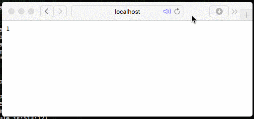
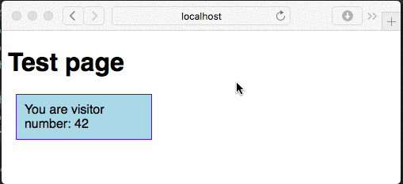

Today we will learn how to build a very simple Express app for counting the visits on a website.
The first thing we have to do, after installing node.js runtime, is to create a folder for our project. After doing that we need to create our npm package and install express framework. The --save flag tells npm package manager to save express as a depencency on the file package.json, the descriptor of our project.
$ mkdir NodejsVisitCounter
$ cd NodejsVisitCounter
$ npm init -y
$ npm install --save expressNow we can start writing our application, on a new file called index.js:
// Loads express library
const express = require('express');
// Holds the current views
var counter = 0;
// Create a new Express app instance
var app = express();
// Registers an event triggered on HTTP GET /visit
app.get("/visit", (req, res) => {
counter++;
res.json(counter);
});
// Start the web server, listening on port 8080
app.listen(8080, "0.0.0.0");This server is very simple: it increments a counter every time an user visits the url /visit and returns the current counter. To register a function to be called whenever there are incoming HTTP request we use app.get(path, function), app.post(path, function) and so on.
We have two parameters on the event function:
req tells us info about the current request: path, body, cookies, headers, ...res allows us to write data as response back to the clientNote how we are using res.json() to send data back to the client using the JSON format: this way the javascript frontend will be able to understand it easier.
Now we want to test the code. We have to call the node runtime, passing our main source file (index.js) as parameter:
$ node index.jsLet's open a browser and test our server: go to page http://localhost:8080/visit.
Yey! Our server works.
But we can already see some major flaws:
Let's address the first issue and save our counter. If we want to save persistent data without using a DB, the easiest way is using a library called node-persist, which saves on JSON files. Let's install it using npm:
$ npm install --save node-persistThe library gives us functions to read and store data, but first we have to call storage.init() to initialize it. Note that, as almost everything in node.js, these function are asynchronously and return Promises.
storage.setItem(key, value) saves a valuestorage.getItem(key) reads a value, returning a promise with the value read as parameterLet's update our code accordingly, loading and saving the counter to file using node-persist library:
// Loads express and storage library
const express = require('express');
const storage = require('node-persist');
// Holds the current views
var counter = 0;
// Create a new Express app instance
var app = express();
// Registers an event triggered on HTTP GET /visit
app.get("/visit", (req, res) => {
counter++;
// Saves counter into the store and send response AFTER the store has been saved
storage.setItem("counter", counter).then(() => {
res.json(counter);
});
});
// Inits permanent storage and reads the saved counter
storage.init().then(() => storage.getItem("counter")).then((value) => {
// Checks if value read is valid, otherwise set it to 0
if (value > 0) {
counter = value;
} else {
counter = 0;
}
// Start the web server, listening on port 8080, AFTER the counter has been read
app.listen(8080, "0.0.0.0");
});The last think to do is writing a javascript snippet to insert the counter in out pages, and allow the server to serve static pages.
After we've created a folder with our static content (./static in this case), we have to tell express to serve files from the folder if the urls match. Simply add this line of code under our app initialization:
// Create a new Express app instance and enable static pages
var app = express();
app.use(express.static('./static'));Let's write now a proper HTML page (index.html) and place it on the static folder.
<!DOCTYPE html>
<html>
<head>
<meta charset="utf-8">
<style>
body {
font-family: sans-serif;
}
.counter {
padding: 10px;
margin: 10px;
background-color: lightblue;
border: 1px solid blue;
width: 150px;
}
</style>
<script>
// GET request on /visit and then parse JSON
fetch("/visit").then(response => response.json()).then(value => {
document.getElementById("countervalue").innerHTML = value;
});
</script>
</head>
<body>
<h1>Test page</h1>
<div class="counter">
You are visitor number: <span id="countervalue"></span>
</div>
</body>
</html>Let's open a browser and test our page: go to http://localhost:8080/.
